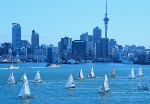
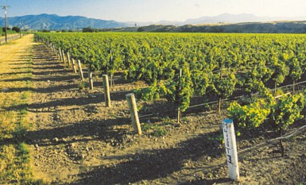

 If time is on your side, you’ll soon fill it in Auckland with a huge range of activities to suit anyone’s tastes.
Birds and Wildlife
“… the Land of the Long White Cloud [New Zealand] took on a new fascination for me: a land of botanical treasures, of ferns and their close relatives, some of which had first stood upright on earth more than 350 million years ago; of trees, mighty enough to have sheltered dinosaurs; and of flower-bearing plants that evolved unmolested by the teeth of herbivorous mammals. A land of wonders.” Renowned botanist & conservationist David Bellamy
Auckland’s harbours, forests, parks and reserves, wetlands, hills and offshore islands provide habitats for a wide variety of native birdlife and wildlife.
Dolphins and whales, including orca, are regularly seen in the Waitemata Harbour.
West of Auckland are the Waitakere Ranges where mature and regenerating forest is populated by forest birds, lizards and insects. Birdlife includes the grey warbler, fantail, silvereye, tui and the gorgeous kereru – native wood pigeon. Native wetas dwell in the forest’s damp caves and rocky overhangs, geckos and skinks hide among the leaves and the forest is also home to the primitive and rare Hochstetter’s frog.
Also on the west coast is Muriwai, where one of only three mainland nesting colonies of gannets in New Zealand can be viewed from well-positioned platforms.
Two very special Hauraki Gulf islands provide sanctuary to native birds and wildlife. Tiritiri Matangi, a predator-free island, is an open sanctuary where visitors can walk among several species of endangered birds. Day trips run to Tiritiri Matangi Island from downtown Auckland.
Little Barrier Island is an internationally recognised nature reserve. Like Tiritiri Matangi it is predator-free, Its inhabitants include many rare and endangered species, among them, the short-tailed bat, stitchbird, brown teal, Cook’s petrel, black petrel, giant weta and tuatara. Breeding populations of kakapo, kokako, brown kiwi and saddleback have been established.
Outings On the Wild Side
If you enjoy getting back to nature - hiking, bush walks or the beach offer an opportunity to ‘take a walk on the wild side’ in Auckland.
The Waitakere Ranges have a network of nature trails and walking tracks catering for everyone from the afternoon stroller to the serious tramper. Several companies operate regular personalised forest and coastal tours. These can be adapted to fit personal requirements, and can include mountain biking, canyoning, horse riding or snorkeling.
Rangitoto Island is one of Auckland’s largest volcanoes with hiking trails to the summit and spectacular views over the city and gulf. It features unique vegetation which has adapted to the harsh environment.You can either walk to the summit or take the “Volcanic Explorer Summit Safari” which offers a relaxed ride to the base of the summit by tractor-train, with a short walk to the stunning summit.
Carefree Cruising
With three huge harbours and coastline in every direction, Auckland offers plenty of watery experiences. Cruise the beautiful Waitemata Harbour, explore an enchanting island or take to the high seas and head for the Pacific horizon.
A brief 10 minute cruise across the harbour is Devonport, a quaint seaside suburb of Auckland. It is popular for shopping, art and cafés and known for its beautiful villas and gardens. Cruises also take visitors to Hauraki Gulf islands including Waiheke, Rangitoto and Kawau. All Waitemata Harbour ferries operate regularly from the historic Ferry Building located in downtown Auckland.
 For a different water experience, try the thrill of sailing or match racing on an America’s Cup yacht. NZL40 was built for the 1995 America’s Cup and provides a spectacular day out. Clients can be as involved as much as they wish.
Wine Trails
New Zealand wines are acclaimed around the world and some of the country’s renowned winemaking areas are located within 20km of Auckland’s CBD.
Kumeu, Huapai and Waimauku, northwest of Auckland are home to a cluster of award-winning wineries, while the Henderson Valley, west of Auckland, is one of New Zealand’s oldest winemaking areas. Waiheke Island has a long winemaking history and is known for its distinctive art, stylish cafes and restaurants.